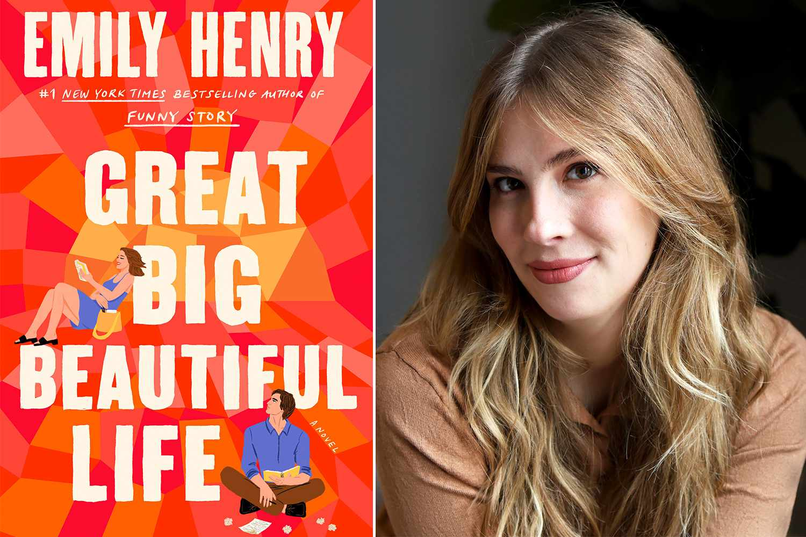
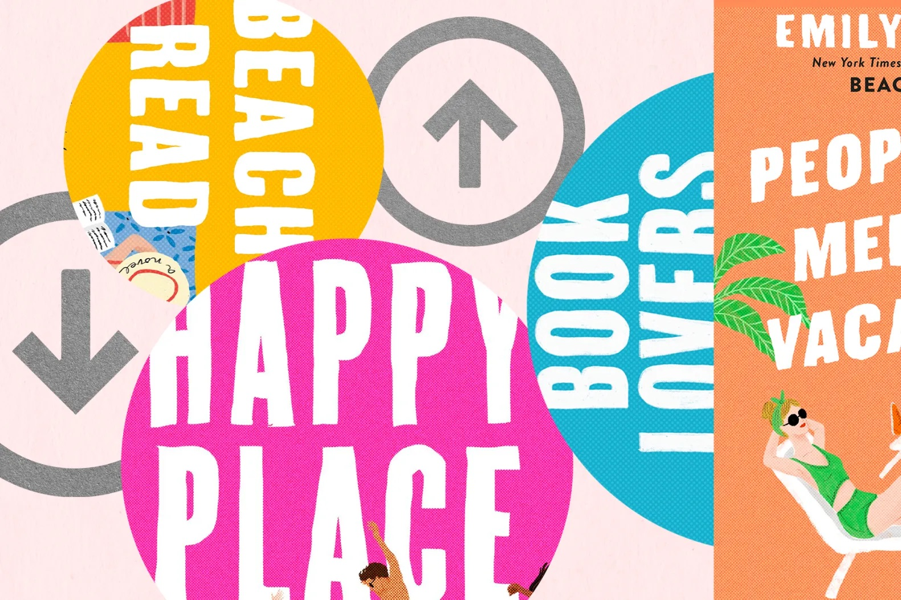
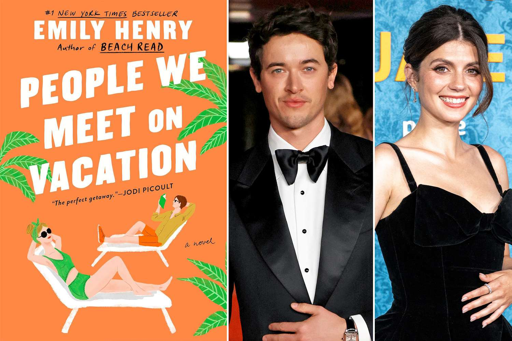

Emily Henry Takeover
Emily Henry is a bestselling author known for witty, emotionally layered contemporary romances that blend sharp humor with heartfelt explorations of love, grief, and personal growth. Her novels, including Beach Read and Book Lovers, often feature complex characters who challenge each other in unexpected ways while discovering what they truly want in life and relationships.
Not only has she sold over 2.4 million copies of her books, but she is also a New York Times bestselling author. She has been the recipient of the Goodreads Choice Awards for Best Romance three years in a row: People We Meet on Vacation (2021), Book Lovers (2022), and Happy Place (2023). Her novels are a must-read for anyone who loves smart, contemporary romance with relatable heroines, charming love interests, and just the right amount of spice. Her books are perfect for escaping into a world of sizzling chemistry, great banter, and characters you can't help but fall in love with.

Great Big Beautiful Life is Emily Henry's most recent novel that blends romance with a mystery, following two biographers, Alice and Hayden, competing to write the life story of a reclusive heiress, Margaret Ives, leading to a "grumpy/sunshine" romance between the rivals as they uncover secrets. The book deviates from Henry's typical romance-focused novels, incorporating elements of women's fiction and a "whodunit" mystery, with some readers finding the romance subplot underdeveloped compared to the main story.
Alice Scott is an eternal optimist still dreaming of her big writing break. Hayden Anderson is a Pulitzer-prize winning human thundercloud. And they’re both on balmy Little Crescent Island for the same reason: To write the biography of a woman no one has seen in years--or at least to meet with the octogenarian who claims to be the Margaret Ives. Tragic heiress, former tabloid princess, and daughter of one of the most storied (and scandalous) families of the 20th Century. Two writers compete for the chance to tell the larger-than-life story of a woman with more than a couple of plot twists up her sleeve in this dazzling and sweeping new novel from Emily Henry.

Prior to the Covid-19 pandemic, Cincinnati author Emily Henry was a successful young-adult fiction writer best known for her female-driven stories that delved into magical realism and a hint of the extraterrestrial. But in the past five years, since the fortuitous publication of her first adult romance novel Beach Read, Henry has gone from an author with a small yet devoted fan base to a publishing titan with four New York Times Best Sellers and 2.4 million books sold worldwide. In an online book space dominated by flops, Henry’s name has become synonymous with fleshed-out storylines and a modern take on romance that centers her character’s personhood above their romantic pursuits — something she has TikTok’s publishing corner, BookTok, to thank for.
“I feel afraid [of BookTok] but I love it,” she told Time in 2023. “They brought reading back into the public sphere in a way that I feel like it hasn’t been in so long so it’s kind of magical.”
Emily Henry saw a major surge in popularity thanks to TikTok’s “BookTok” community, where readers began posting emotional reactions, fan edits, and recommendations of her romance novels. The viral attention helped propel books like Beach Read, Book Lovers, and Happy Place onto bestseller lists and into mainstream visibility far beyond traditional book marketing channels. As her readership exploded, BookTok users also started passionately debating which of her novels is the “best,” leading to endless tier lists, ranking videos, and friendly-but-intense arguments over everything from character chemistry to emotional impact and endings.

Pack your bags, because it’s time for Poppy and Alex’s big trip. Tom Blyth (Alex) and Emily Bader (Poppy) star as unlikely best friends in the new rom-com People We Meet on Vacation. Directed by Brett Haley (Hearts Beat Loud, All the Bright Places), the adaptation of the beloved Emily Henry novel is now streaming on Netflix.
The film adaptation of People We Meet on Vacation generated massive excitement among romance readers, especially within the online BookTok community that helped turn Emily Henry into a household name. Fans spent years imagining how the beloved friends-to-lovers story between Poppy and Alex would translate onscreen, making casting announcements, first-look photos, and production updates spread rapidly across social media.